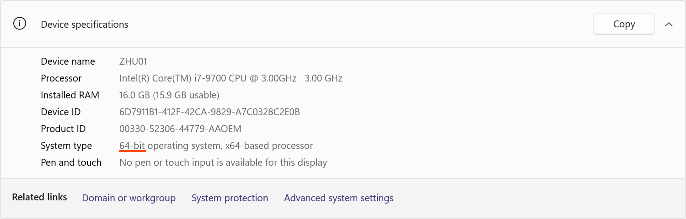
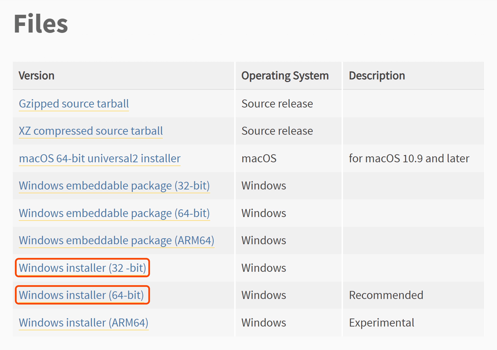

CPT-135 - Programming in Python
Python Programming Environment with Microsoft Visual Studio Code on Windows
•Know whether your system is 32-bit or 64-bit.
1)Go to Settings (Windows Key + I) and select About.
2)In Device specifications, you can find whether your system is 32-bit or 64-bit (see below).

•Install Python interpreter.
1)Go to the following webpage:
https://www.python.org/downloads/release/python-3114
2)Scroll to the Files section at the bottom of the page.
3)If your system is 32-bit, then download the Windows installer (32-bit); if your system is 64-bit, then download the Windows installer (64-bit) (see below).

4)(Important) Right-click the installer and select Run as administrator (see below).